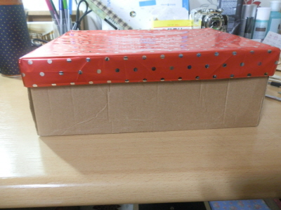
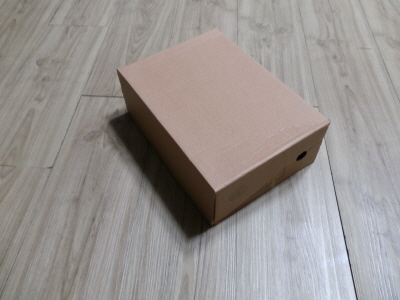
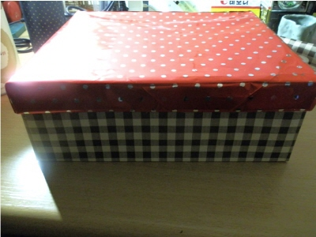
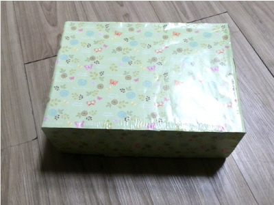
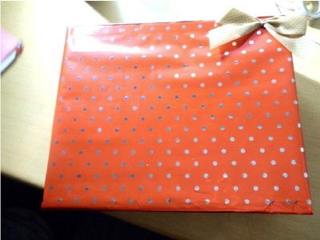
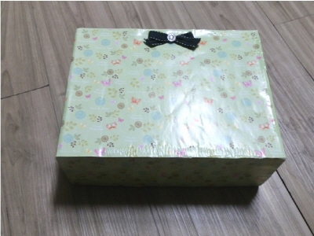

1. 종이상자 리폼
 
택배를 받은 후 남은 상자들.
첫 번째 사진은 선물로 받고 남은 포장지를 이용한 것이지만 미완성인 상태.
이 상자들이 간단한 과정을 거쳐 변할 수 있습니다.
 
Processing..
그저 포장지를 붙였을 뿐인데도 시중에 파는 상자들 못지 않게 변화한 모습을 확인할 수 있어요!
 
After
포장지만 붙이면 그래도 밋밋해 보일 수 있어서 장식도구를 붙여 보았어요.
예쁜 상자를 굳이 사지 않아도 포장지 값만으로도 이렇게 만들 수가 있답니다~
-1-